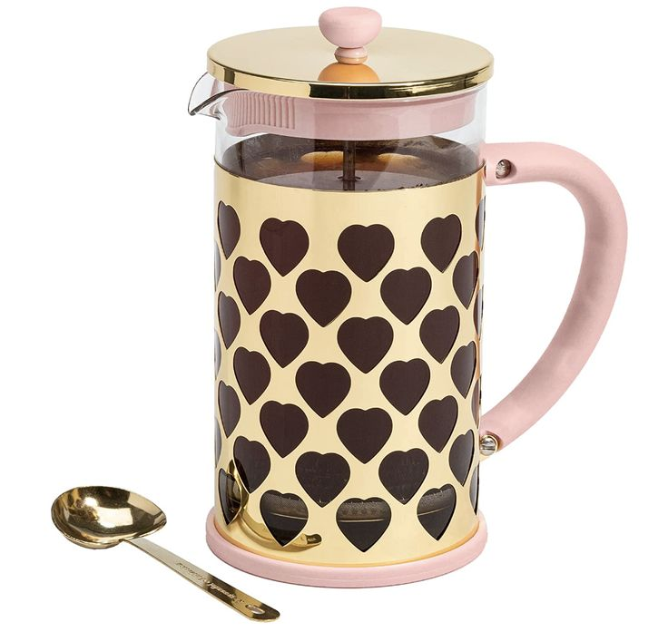
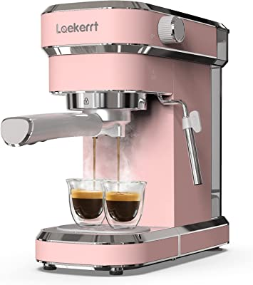
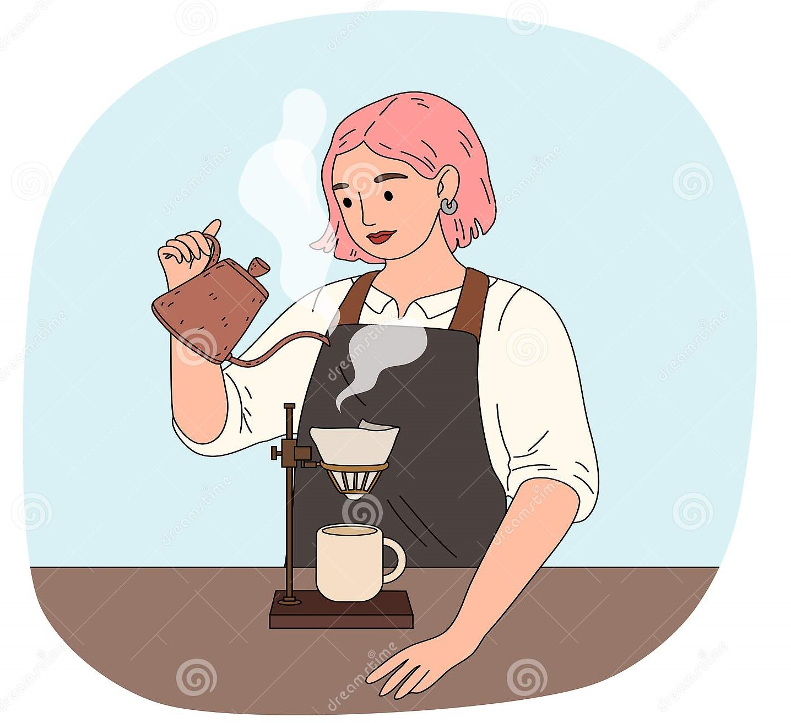

métodos de extracción del café.
|  |
metodo por inmersión.En pocas palabras, este método de preparación de café consiste en agregar el agua caliente directamente a los granos molidos de café, pero el tiempo en que dejes el café remojado es esencial para el resultado final. Déjalo por demasiado rato y beberás un café súper amargo, sácalo demasiado temprano y no habrá en el mundo nada más suave que tu taza de café. |
|  |
metodo por infusión presurizada.Un café a presión es simplemente un café que ha sido extraído de esta forma, y su resultado más conocido es el café espresso que se prepara en la máquina espresso estándar. Además de este método, existen otros donde puedes conseguir una excelente taza de café. |
|  |
metodo por goteo.La mayoría de las cafeteras que utilizan este método son pequeñas, portátiles y económicas, y tienen algunas características similares: Tienen forma cónica, utilizan un filtro y se debe distribuir el agua sobre el café de manera pausada. |